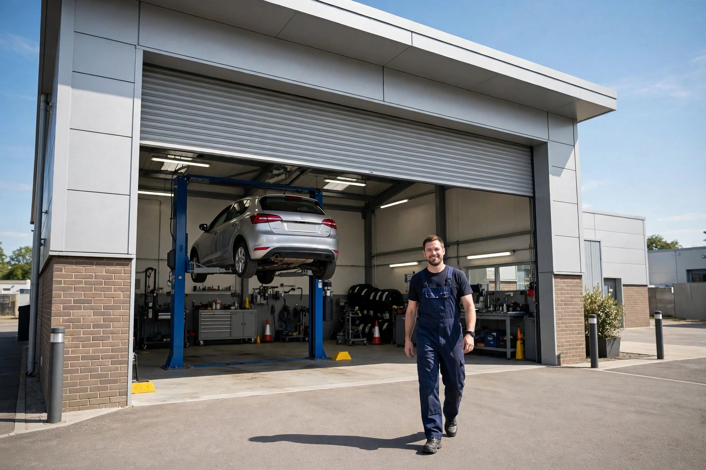
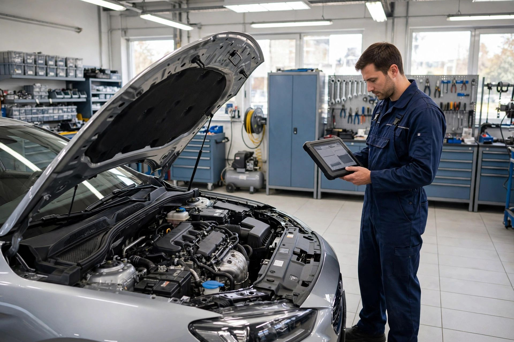
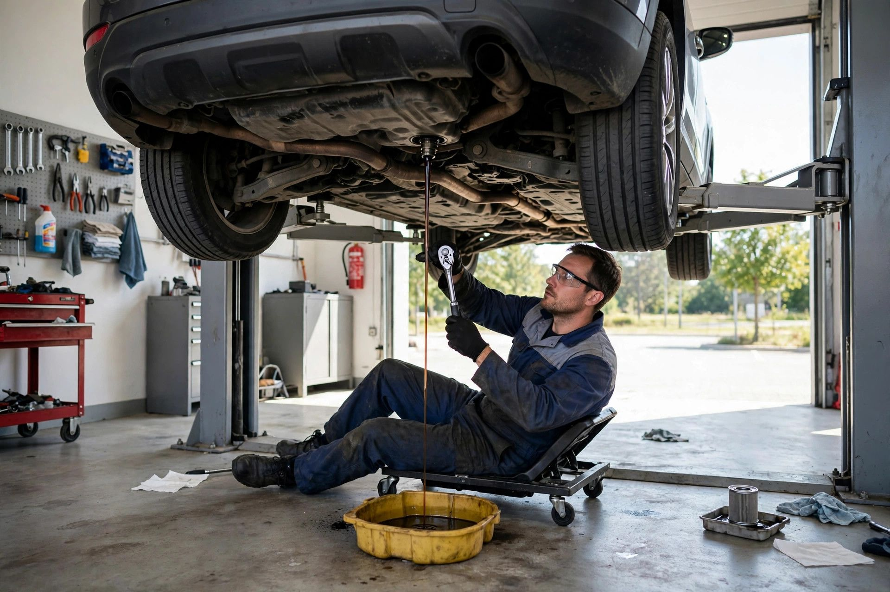
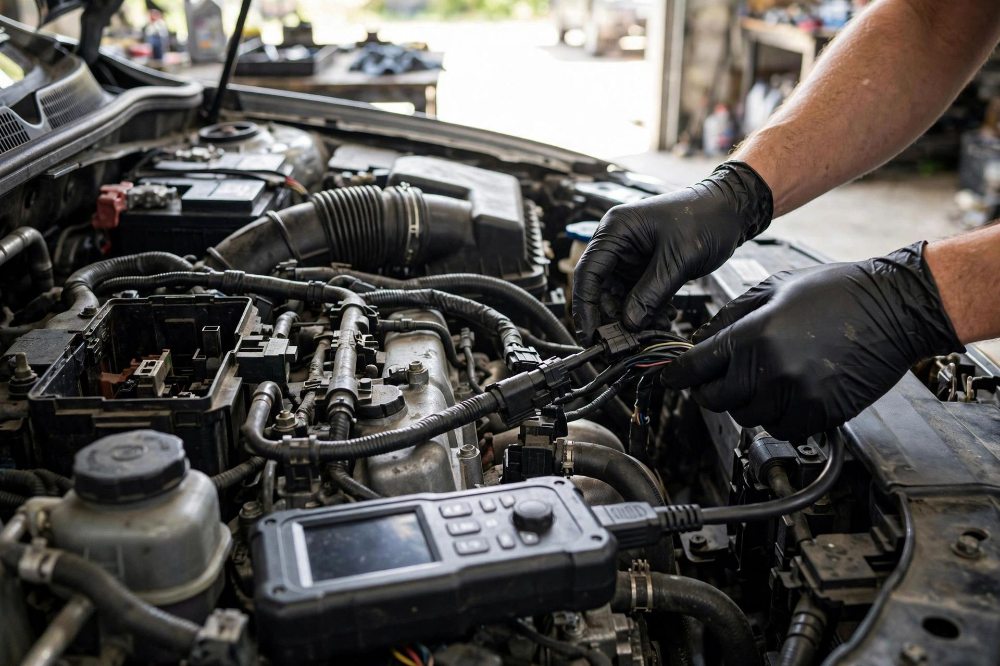

Interim & Full Servicing
Scheduled services that keep your car reliable, efficient and safe on the road.

Sheffield · Independent auto servicing & diagnostics
Our Sheffield workshop specialises in vehicle servicing and modern electronic diagnostics — honest advice, a clear quote before any work, and repairs done properly the first time.
Specialist service
Routine services plus dealer-level electronic fault finding — so problems are found fast and fixed properly, not guessed at.
What we do
Scheduled services that keep your car reliable, efficient and safe on the road.
Modern electronic fault finding that pinpoints the real problem instead of guessing.
Warning lights, sensors and electrical gremlins — traced and fixed properly.
Pads, discs and a full brake system inspection — your safety comes first.
Shock absorbers, springs and steering components for a smooth, stable drive.
Exhaust repairs and emissions checks to keep your car running clean and quiet.
All makes and models
Cars and light vans — we service and diagnose them all, whatever the badge.

Why choose us
We keep it simple: an accurate diagnosis, a price agreed up front, and work we stand behind. You leave knowing exactly what was done — and why.
The workshop in action


Come say hello
Good to know
We specialise in vehicle servicing and electronic diagnostics, plus everyday repairs — brakes, suspension, exhaust and general maintenance.
We connect your vehicle to our electronic diagnostic equipment, explain what we've found, and confirm the price with you before any repair begins.
Monday to Saturday 9:00 AM to 6:00 PM, and Sunday 11:00 AM to 3:00 PM.
Call us on +44 7541 945323 or drop by the workshop at 1 Maltravers Rd, Sheffield — we'll get you booked in.
Come see us